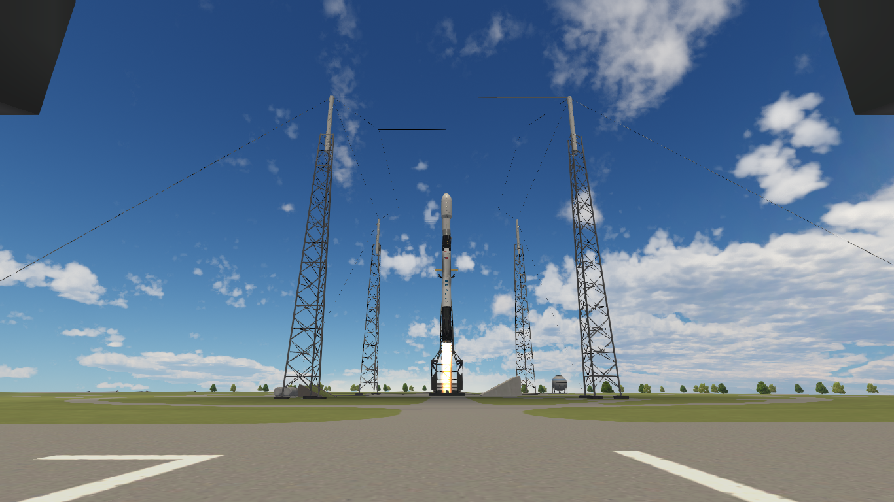
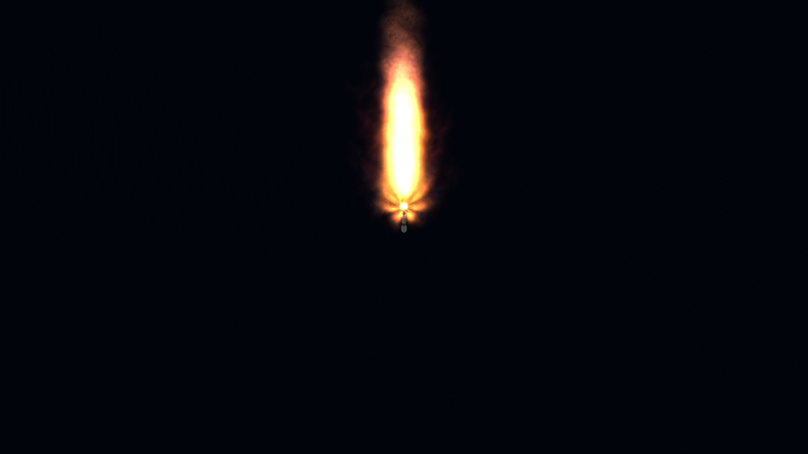
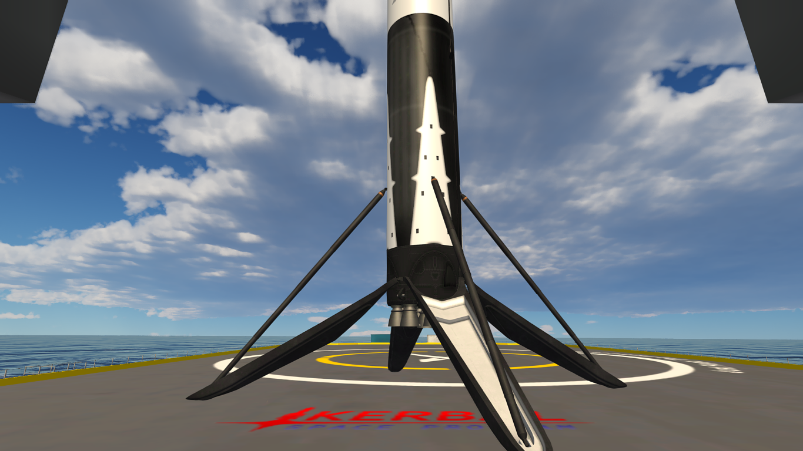
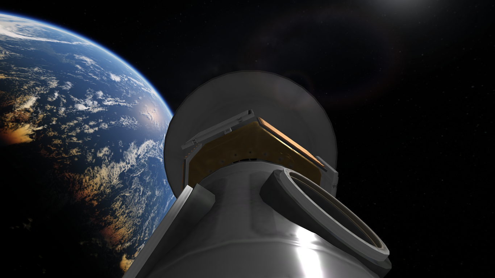

GPS-7
Vehículo: Falcon 9 Block 5
Fecha: 10 de junio de 2025
Estado: Éxito

Introducción
Halcon Space llevó a cabo con éxito el lanzamiento de la misión GPS-7 a bordo de su cohete Falcon 9 Block 5, desde el Complejo de Lanzamiento Espacial 40 (SLC-40).
La carga útil consistió en un satélite GPS de nueva generación, diseñado para mejorar la precisión y confiabilidad de la navegación global.
La primera etapa B1068.2 fue utilizada en esta misión y logró aterrizar con éxito sobre la plataforma Just Read The Instructions (JRTI).
Como carga útil secundaria, viajaron también 4 satélites K-COM Alpha de AstroCore Dynamics.
Detalles Técnicos
- Vehículo: Falcon 9 Block 5
- Altura del cohete: 70 m
- Propulsor: B1068.2
- Carga útil: Satélite GPS de nueva generación
- Órbita: GEO (Órbita Geoestacionaria)
- Recuperación: Éxito sobre JRTI.
Imágenes de la misión


